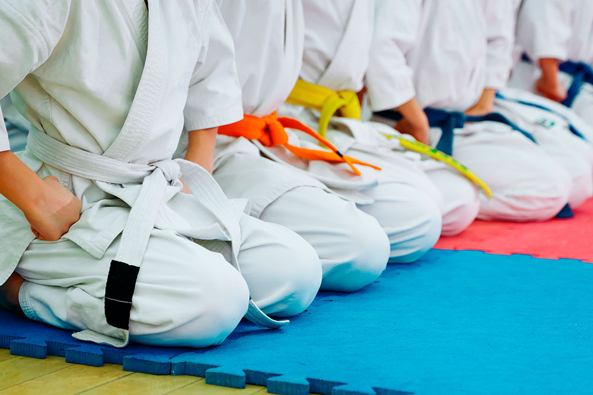
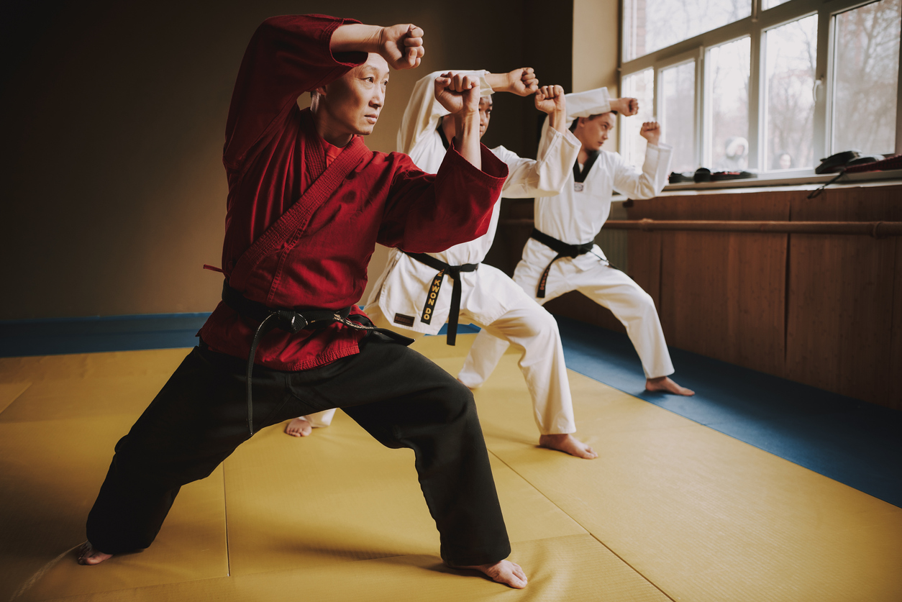

Unos de los artes marciales más conocidos, el karate tiene
su origen en Japón (concretamente en la actual Okinawa) y se caracteriza
por el uso de puñetazos, palmadas, patadas y bloqueos de manera
firme y con fuerza con el fin de derrotar al rival con unos pocos golpes.
Este arte marcial integra valores como el respeto y la cortesía,
siendo importante mostrarlo a través de diversos tipos de saludos.
También busca mejorar el nivel de alineación corporal, el endurecimiento
del cuerpo y la capacidad de conectar con él
¿Que es el Karate?
El Karate Do es un arte marcial originado en las islas Okinawa en Japón, y se caracteriza
por el uso de las manos y los pies para realizar acciones de defensa y posteriores ataques.
En el aspecto físico se desarrolla fuerza, velocidad, agilidad y elasticidad. En el plano mental
se adquiere capacidad de concentración, de memoria, análisis y organización. Emocionalmente se
obtiene seguridad, confianza y una gran fuerza de voluntad.

Fundamentos
Es importante mencionar que el Karate Do, además de ser una disciplina deportiva,
contiene un fundamento filosófico de respeto, paz y convivencia armónica con todo lo que nos rodea.
Elementos
Los elementos principales del Karate Do son la kata, que traducido al espańol se define como forma,
y el kumite, entendido como combate.
El kata es un sistema de entrenamiento utilizado en las artes marciales orientales, en el que se
concatenan una secuencia de técnicas codificadas con movimientos, posiciones, ritmo y significado
específicos.
Es como recitar una composición poética con el cuerpo, donde en lugar de palabras están los
movimientos, que hay que realizar con una determinada entonación y a un ritmo determinado.
Muy a menudo te dirán que el Kata es un combate imaginario y, en consecuencia, te presentarán
su significado, el bunkai.
Revisando su historia, sin embargo, el sistema de Kata nació con un propósito, evoluciona en
algo más y es transformado por muchas escuelas modernas de Karate.